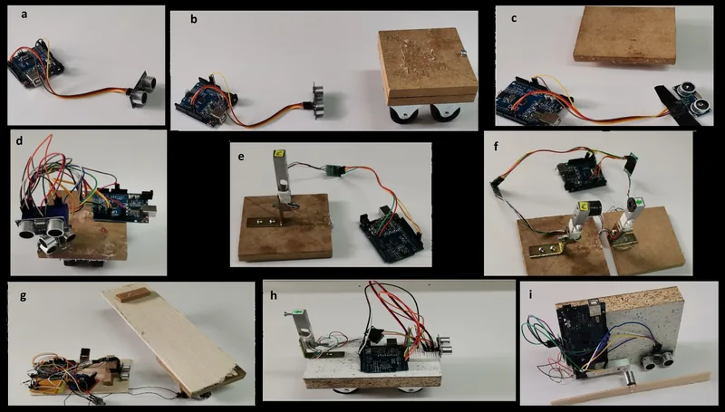

Praxisorientiertes technisches Lernen
Mein Beitrag
Ich entwickelte Arduino-Übungen, in denen Lernende Sensordaten erfassen und physikalische Systeme untersuchen.
Einsatz im Beruf
Trainingskits und Workshops für Aufbau, Messung und Fehlersuche entwickeln.
- Mein Beitrag
- Gestaltung technischer Lernaufgaben
- Werkzeuge und Methoden
- Arduino · physische Modelle · Sensoren
Was ich entwickelt habe
Arduino-basiertes Mechaniklernen
Ich habe die Lernmaterialien, physischen Modelle, Elektronik und Arduino-Aktivitäten selbst entwickelt. Lernende bauten und nutzten Systeme zur Messung von Bewegung, Kräften und Energie. Sie verbanden Beobachtungen mit Berechnungen und interpretierten die Daten.
Die Lernerfahrung
Eine konkrete Aufgabe verbindet Sensormessungen mit angeleiteter Analyse. Lernende können die Folgen ihrer Entscheidungen beobachten, statt nur eine Erklärung zu lesen.
Belege und Evaluation
Die veröffentlichten Studien berichten Verbesserungen der Mechanikleistung und kognitiven Ergebnisse nach den Aktivitäten. In der LUMAT-Studie war die Verbesserung der wissenschaftlichen Kreativität nicht statistisch signifikant. Dies sind Bildungsergebnisse, keine beruflichen KPI-Ergebnisse.
- Impact of Arduino Based STEM Education on Cognitive Domain Level of Mechanics and Scientific Creativity (2025) ↗
- Influences of Arduino and Algodoo Based Mechanics Teaching on Achievement (2025) ↗
Ich habe außerdem weitere Arbeiten zur Entwicklung von Lehrmaterialien veröffentlicht. Auf Google Scholar ansehen ↗
Wie ich diese Erfahrung übertragen kann
Ich kann praxisorientierte Trainingskits und Workshops für konkrete berufliche Aufgaben entwickeln. Materialien, Anleitungen und Unterstützung passe ich an die Vorkenntnisse an.
Beispielszenario
In einem technischen Onboarding-Workshop nutzen Teilnehmende ein Modell mit Sensoren. Sie schließen den Sensor an, erfassen Messwerte, untersuchen ein unerwartetes Ergebnis und erklären ihre Diagnose.
Mögliche Produkte: Trainingskits · Aktivitätsanleitungen · Moderationsmaterialien · Messaufgaben · Leistungsprüfung
Mögliche KPIs
Eigenständige Ausführung · Aufbaufehler · Bearbeitungszeit
Projektbild
